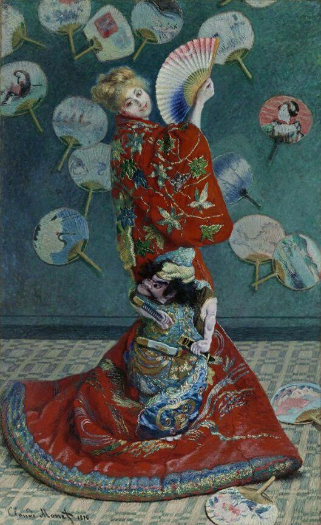
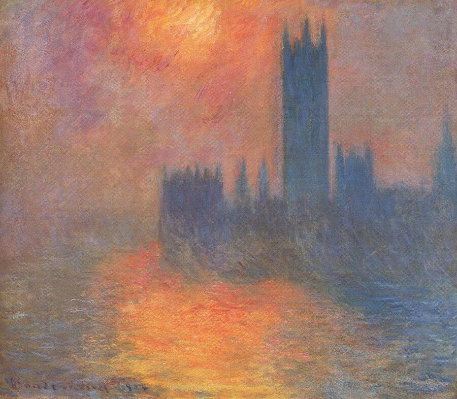

Мабуть, імпресіонізм найчастіше викликає асоціацію зі Impression, Сходом сонця, сюжет відтворений в порту Гавру. Цю картину художник виставив разом з творами Каміля Піссаро, Альфреда Сіслея, Едуарда Мане, Поля Сезана, Едгара Дега та деякими іншими митцями. На той час, відвідувачі виставки не втямили цінності полотен нового жанру, насміхалися над творами, жартували навіть, що не можуть розібрати сюжет картин. Тогочасний критик, Луї Леро написав статтю-відгук в газеті Le Charivari, у якій використав термін "Враження" у заголовку, відсилаючись до назви картини. Хоча стаття роз*бала вщент художників, виставивши їх до того ж дурнями, породженими від сластолюбивих матерів, а проте група художників, зокрема Дега та Ренуар були щасливими, що їх прозвали імпресіоністами.
Часто, щоб зрозуміти, що з себе представляє людина, діяч, ми шукаємо його думки, позиції. Я надибала дрібку цитат Клода Моне. Можливо, вони вас розважать або ж ви, прочитавши їх, знайдете однодумця.
The noblest pleasure is the joy of understanding.
No one is an artist unless he carries his picture in his head before painting it, and is sure of his method and composition.
No one but myself knows the anxiety I go through and the trouble I give myself to finish paintings which do not satisfy me and seem to please so very few others.
З відкриттям Японії своїх портів, прибульці, надокучливі європеці з жадібністю купували все східне, японське. Клод Моне виявився не винятком. Він мав слабкість до японської каліграфії. Хоч наступна картина не про письмо, але все ж погляньте на цю європейську красуню, що безтурботним, ненав'язливим поглядом дивиться на вас.
Моне також був у Великій Британії, виконав серію картин з парламентом, на березі Темзи та мостом Ватерлоо. Але постійна туманна погода Лондона навіювала неприємні imppresions на Моне, про що він навіть писав у листах до дружини.
Після повернення з Великої Британії, художник написав картину з маковим полем. Жінка, зображена на полотні, ймовірно Каміль, Дружина Моне, а дитина - його син, Жуан.

Однією з улюблених тем для Моне - тополі. Так само як і з копицями сіна, Моне створив серію полотен, експерементуючи з тінями, залежно від проміжку доби.

Руанський собор - неодноразова тема картин художника. І знову ж таки, акценти на тінях, наступна картина - створена в найулюбленішу добу імпресіоніста.

Gracefully спи**ені матеріали з: